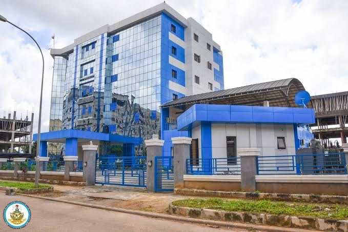

Major shakeup in Nigerian Air Force, 67 senior officers redeployed

The Nigerian Air Force has reassigned 67 senior officers across its operational commands, training institutions and strategic defence bodies. Chief of the Air Staff Kelvin Aneke approved the appointments on 7 November. The service said the changes are intended to match officers’ experience and professional skills with its operational and institutional priorities, including support for ongoing military campaigns. All affected officers hold the rank of Air Vice Marshal and are expected to complete handover formalities by 13 November.
At NAF headquarters, Adeniran Ademuwagun was appointed chief of transformation and innovation, while Nnamdi Ananaba became chief of operations. Other appointments include Precious Amadi as chief of air intelligence, Enebong Efiom as chief of training, and John Laoye as chief of aircraft engineering.
The reshuffle also changes leadership across operational commands. Nnaemeka Ilo was appointed air officer commanding Tactical Air Command, Bashir Mamman took over Mobility Command, and Olufemi Ogunsina was named head of Logistics Command. Michael Onyebashi will lead Special Operations Command, while John Ukeh was appointed commander of the Nigerian Air Defence Corps. Garba Jibia was named deputy force commander of Operation Hadin Kai, the joint task force fighting Boko Haram and Islamic State West Africa Province insurgents in the North-east.
Other officers are moving to roles at Defence Headquarters, the Office of the National Security Adviser, the Defence Intelligence Agency and the Defence Space Administration. Usman Abdullahi was appointed director of defence operations, while Elijah Ebiowe became deputy coordinator for national intelligence at the ONSA. Changes also extend to professional military education: PB Philips was appointed commandant of the Armed Forces Command and Staff College, and AO Akinbunwa will lead the Air Force War College. The NAF said the realignment reflects a commitment to leadership renewal, accountability and improved operational effectiveness.
Source: Premium Times